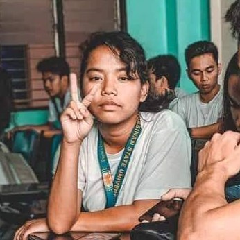

About Me
Hi there I’m Mikhaela Acerden Santos, 20 years of age and living at Santa Monica, Moncada, Tarlac. I’m a very bubbly person when I’m surrounded by people but I also enjoy being alone because I can concentrate with myself and I can do things I love doing. I have lots of interest with different things but having hard time on starting to learn about them. I’m bad in doing my plans in my day to day activities but I manage to not conflict my studies because of my laziness. I love to watch movies especially on action, mystery and detective genres because I feel like it gives the thrill on my thinking skills as I also try to find the culprit in the film. I also read novels and novellas in different genres because for me reading is more imaginative than films as authors can explore in writing. I love listening to music because I can relate to the lyrics and the beat also calms me. Aside from watching, reading and listening, I also love sleeping because this calms me and bring back my energy whenever I’m drain or tried. In terms with my studies, I try to learn maybe not all but a lot of knowledge in my different subjects as I know they will be very helpful when I work. I can’t deny that all of them are hard and stressful but at the end of the day I manage to think if I had new learnings on my weekday’s online classes. In my weekends I do my assignments and house duties and at the same time I prepare myself to next weekdays that will come. As student I try to focus on my studies and on my growth because for me I need to be ready to face the world when I graduate but as a youth I also have fun to lessen my stress or problems to normalize my daily living and to prevent myself in hurting my own self or being captivated by negative energy.